Разбор · первый слайд презентации
Титульный слайд: как оформить первый слайд презентации
Оформление титульного листа презентации: что писать, каким шрифтом, в каком порядке.
Внутри 5 шаблонов титульного слайда, бесплатноОтвет за 10 секунд
На титульном слайде пять строк, сверху вниз:
- Тема: одна мысль до 10 слов, самая крупная строка. Под ней подзаголовок, если нужен.
- Кто выступает: фамилия, имя, отчество, должность, класс или группа.
- Руководитель: только для проекта и защиты, рядом с автором.
- Откуда: школа, вуз, организация.
- Где и когда: мероприятие, город, год, в самом низу.
В проекте и на защите учреждение часто ставят наверх: сверьтесь с методичкой.
Алёна Прасолова, фотограф, собираю презентации к выступлениям
26 ноября 2026 · 8 минут чтения
Титульный слайд часто висит на экране дольше любого другого: пока зал рассаживается и подключают ноутбук. Ниже по порядку: что писать, каким шрифтом, что требуют школа, вуз и конференция.
Коротко
- Крупная строка одна: тема, 40-54 пункта. Остальные заметно мельче: 24-28 и 18-20 пунктов.
- Единого ГОСТа нет: что обязательно, написано в вашей методичке.
Что писать на титульном слайде и в каком порядке
Пять строк сверху вниз: тема, кто выступает, руководитель (для проекта и защиты), организация, мероприятие с городом и годом. Больше ничего.
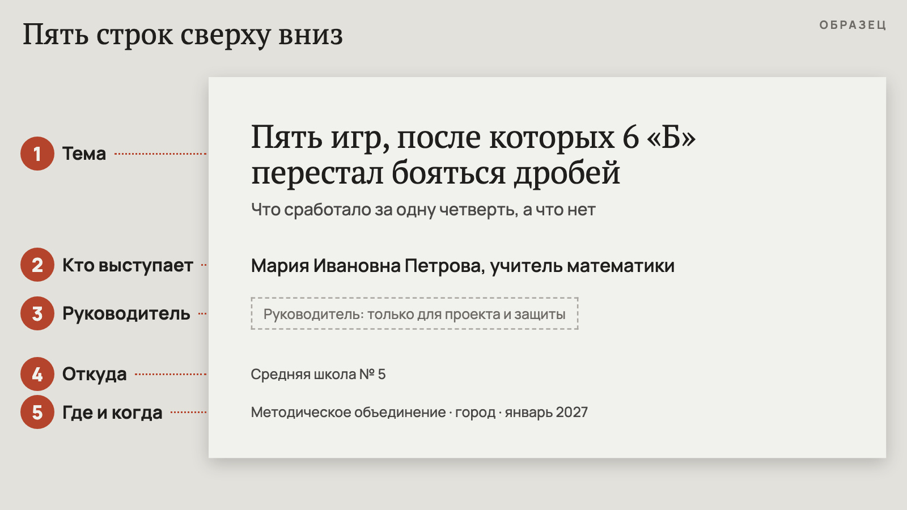
Имя пишите полностью, с отчеством: «Мария Ивановна Петрова, учитель математики». По строке «Петрова М. И.» зал не знает, как к вам обратиться.
В проекте и на защите учреждение часто стоит наверху: сверьтесь с методичкой.
Чего не писать: слов «Презентация» и «Доклад на тему», цели, задач, плана, эпиграфа.
Сделайте так: выпишите пять строк на листок и уберите со слайда остальное. Готовая раскладка: 5 шаблонов титульного слайда, бесплатно.
Титульный лист презентации: что требуют школа, вуз и конференция
Единого ГОСТа на титульный слайд нет: состав строк задаёт ваша методичка или письмо оргкомитета. Ниже три примера из открытых требований.
Школьный проект. Название проекта по центру, автор и руководитель справа внизу. Школу, класс и год добавляйте по своему положению.
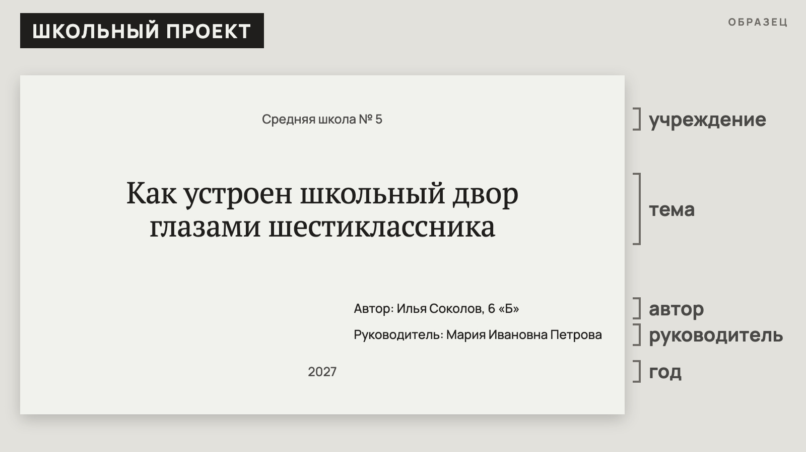
Курсовая и диплом. То же, что на титульном листе работы: вуз полностью, тема, ФИО студента, код и название специальности, ФИО руководителя, город, год.
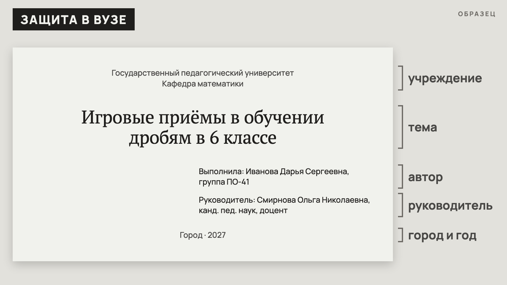
Конференция. Название доклада, все авторы, организация. Докладчика иногда просят подчеркнуть, а у студентов добавить курс, направление и научного руководителя.
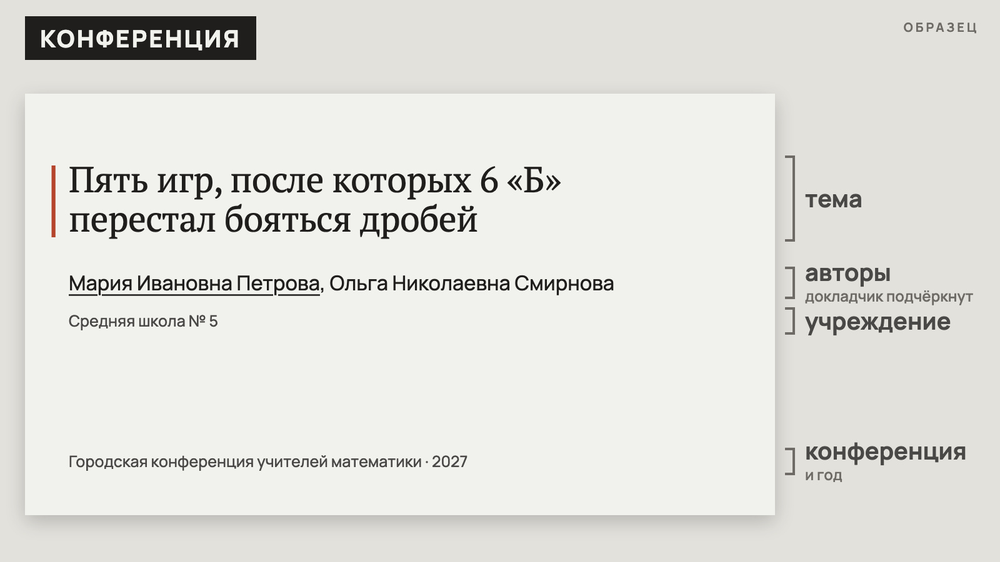
Тему пишите слово в слово, как в приказе, заявке или программе.
Сделайте так: найдите в методичке слово «титульный» и выпишите строки в том же порядке.
Как назвать доклад: заголовок первого слайда как мысль, а не рубрика
Назовите доклад одной мыслью до 10 слов: что получит слушатель. Не «Игровые технологии на уроках», а «Пять игр, после которых 6 „Б“ перестал бояться дробей».


Можно и вопросом: «Почему шестиклассники боятся дробей и что с этим делать».
Тему утвердили приказом? Оставьте её крупно, слово в слово, а мысль поставьте подзаголовком.
Не идёт? Попросите ChatGPT или Claude: «Вот тема и главный вывод доклада. Предложи десять названий до десяти слов, в каждом польза для слушателя». Лучшее перепишите своими словами.
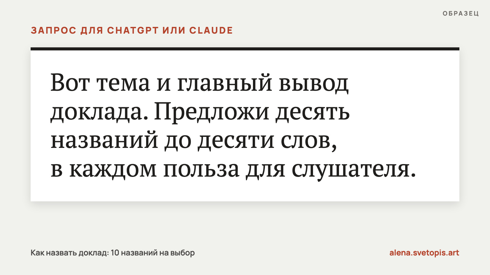
Сделайте так: закончите фразу «После моего доклада вы будете знать, что...». Её конец и есть название.
Размер шрифта на титульном слайде и где ставить заголовок
Тема 40-54 пт, имя и должность 24-28 пт, организация и год 18-20 пт. Крупная строка одна, тема чуть выше середины.
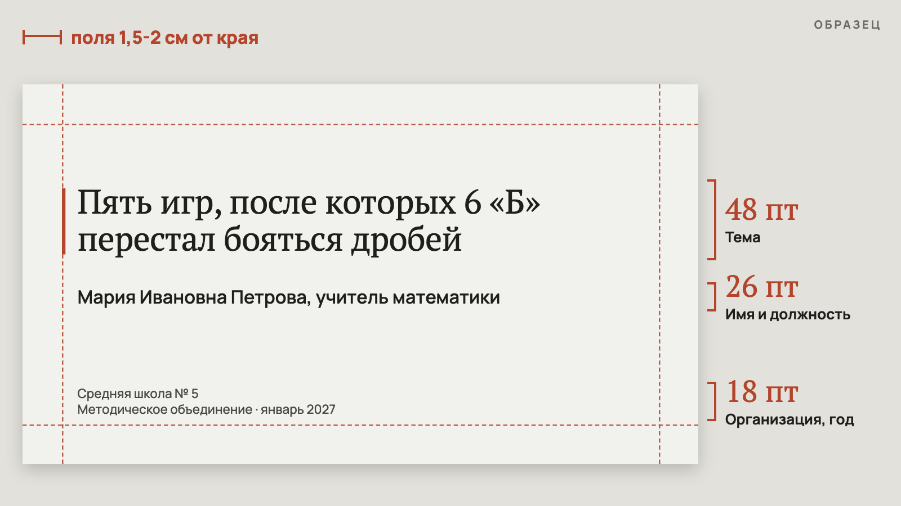
Тема крупнее заголовков внутри презентации (там 32-40 пт), потому что на титуле крупная строка одна. Строки в 18-20 пт здесь такие же подписи, как источники под фото.
Методичка требует «не меньше 28 пт»? Тогда все мелкие строки ставьте 28 пт, а тему 40-44 пт, в две строки.
Выравнивание одно: всё по центру или всё от левого края. До краёв слайда 1,5-2 см. Строки темы делите по смыслу, без предлога в конце строки.
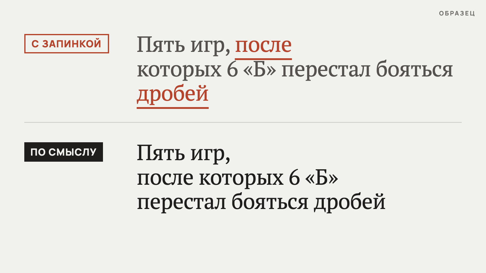
Сделайте так: посмотрите на маленькую картинку слайда в левой колонке программы. Тема читается даже там? Размер верный. Готовая раскладка: 5 шаблонов титульного слайда, бесплатно.
Фото или фон на титульном слайде: что выбрать
Три рабочих варианта: чистый светлый фон, своё фото на половину слайда или фото на весь слайд с темой на тёмной плашке.


Фото берите своё и по теме: класс за работой, кабинет, детские рисунки. На снимке дети? Нужно разрешение родителей.
Я фотограф и на титуле первым делом смотрю, куда падает текст: на лица и на пёстрое я его не кладу.
Картинки из интернета и фоны с завитками не ставьте: на проекторе пёстрый фон съедает буквы. Есть шаблон школы или вуза? Работайте в нём.
Сделайте так: прищурьтесь. Тема пропала в картинке? Поставьте под неё плашку, тёмный прямоугольник, или уберите фото.
Ошибки оформления первого слайда: пример «было» и «стало»
Главная ошибка: самая крупная строка на слайде «Презентация». Ниже ещё шесть, каждая исправляется за минуту.


- Тема заглавными буквами на четыре строки.
- Объёмные буквы с тенью, три шрифта, анимация: на некоторых конференциях её на титуле прямо запрещают.
- Картинка из интернета не по теме.
- «Петрова М. И.» без имени, отчества и должности.
- Название организации крупнее темы.
- Год или мероприятие остались от прошлого выступления.
Сделайте так: пройдите по списку и исправьте всё, что нашли у себя.
Титульный слайд в презентации студента: как уместить всё по методичке
Методичка просит 6-7 строк? Разложите их на три яруса: учреждение вверху, тема крупно в центре, автор, руководитель, город и год внизу.
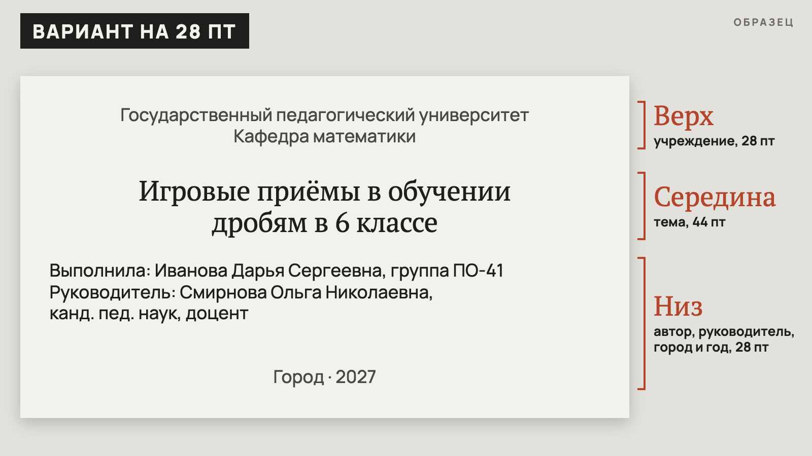
Верх. Полное название школы или вуза, ниже кафедра. Мелко: 18-20 пт, а если методичка требует не меньше 28, то 28.
Середина. Тема, единственная крупная строка, слово в слово как в приказе.
Низ. «Выполнила: ...» и рядом «Руководитель: ...» с должностью и степенью, как на титульном листе работы. Под ними город и год.
Фамилию, должность и степень руководителя проверьте дважды: ошибка на большом экране бросается в глаза.
Сделайте так: положите рядом титульный лист работы и сверьте слайд строка за строкой. Раскладка «По методичке»: 5 шаблонов титульного слайда, бесплатно.
Титульный слайд для презентации педагога и психолога
Педагогу: главное на титуле тема словами слушателей, а не должность со всеми категориями.
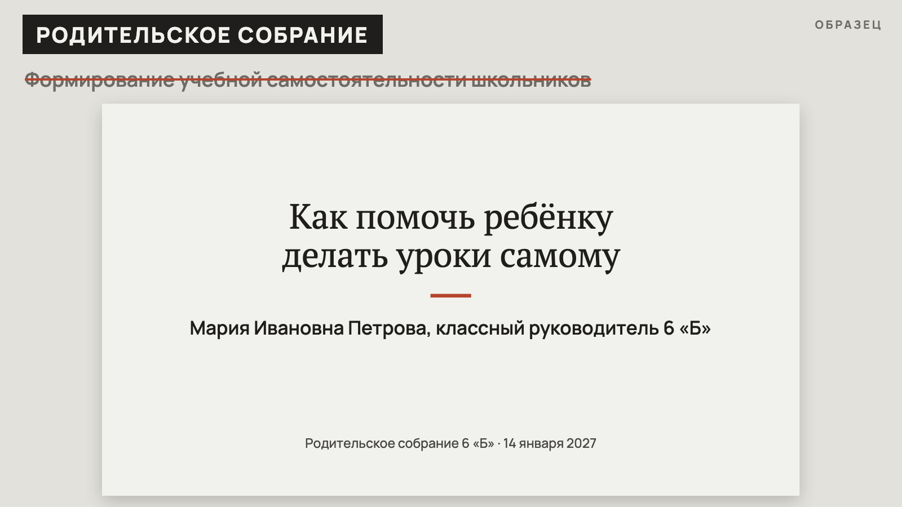
Для родительского собрания: не «Формирование учебной самостоятельности школьников», а «Как помочь ребёнку делать уроки самому». К открытому уроку добавьте предмет и класс. К аттестации и конкурсу строки задаёт положение.
Психологу: простое и бережное название без диагнозов и терминов, фото людей только с их согласия.
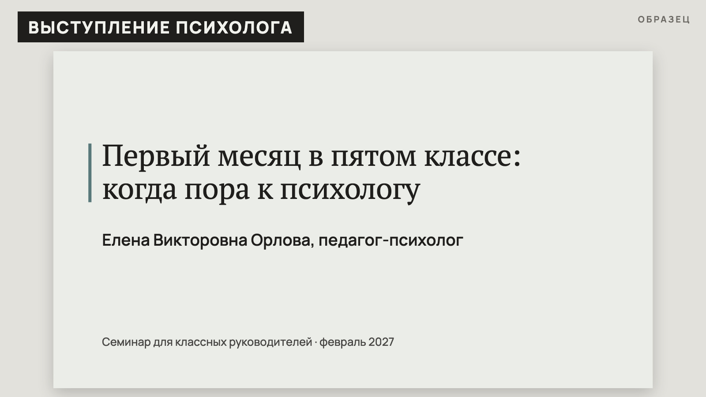
Название прочитают и люди без вашего диплома.
Сделайте так: уберите из темы каждое слово, которое пришлось бы объяснять маме шестиклассника. Готовая раскладка: 5 шаблонов титульного слайда, бесплатно.
Что говорить на первом слайде презентации
Титульный слайд вслух не читают. Скажите три фразы меньше чем за полминуты: кто вы, зачем слушать и как построен рассказ.
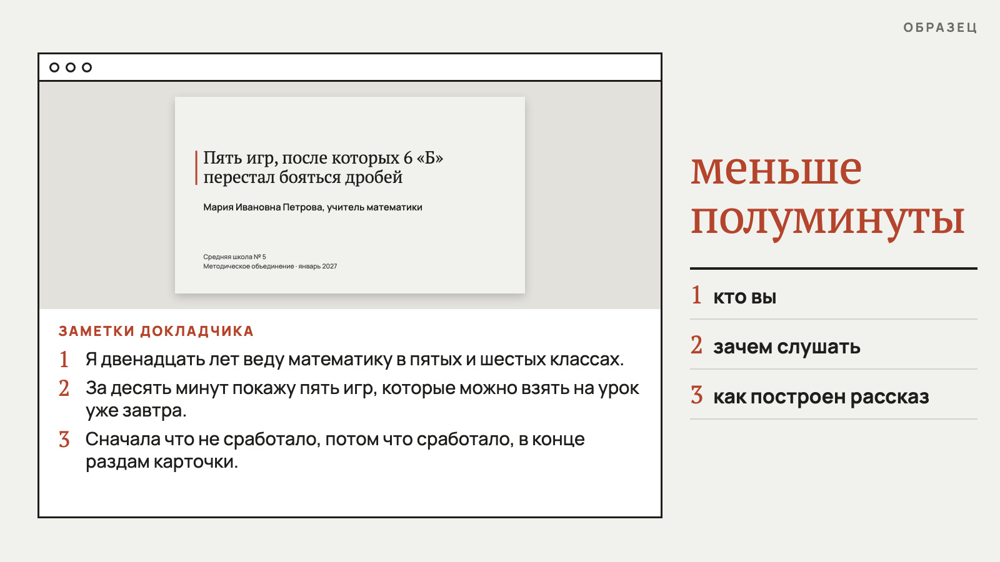
- Кто вы: «Я двенадцать лет веду математику в пятых и шестых классах».
- Зачем слушать: «За десять минут покажу пять игр, которые можно взять на урок уже завтра».
- Как построен рассказ: «Сначала что не сработало, потом что сработало, в конце раздам карточки».
Включите титульный слайд заранее, пока люди рассаживаются: тему и имя они прочитают сами.
Сделайте так: запишите три фразы в заметки докладчика (поле под слайдом) и проговорите вслух с секундомером.
Чем закончить презентацию: последний слайд в пару к титульному
Последний слайд делайте парой к титульному: та же раскладка, вместо темы главный вывод, ниже имя и почта.


Но загляните в методичку: в некоторых прямо просят слайд «Спасибо за внимание» или повтор титульного в конце. Тогда сделайте, как просят, а вывод поставьте предпоследним.
Что именно писать в трёх строках последнего слайда и что говорить в конце: разбор «Последний слайд презентации: что написать вместо „Спасибо за внимание“».
Проверка титульного слайда перед выступлением: 6 вопросов
Шесть вопросов за минуту. На все ответ «да», значит титульный слайд готов.

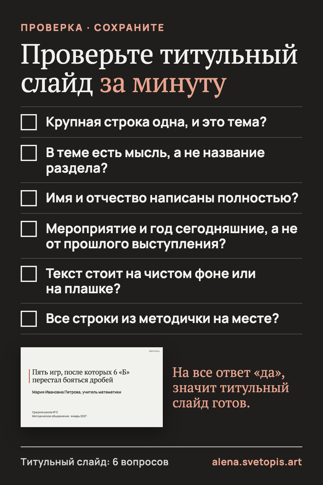
Сохранить картинку
Картинка 1000×1500, 296 КБ, для телефона.
Файл скачивается, ищите его в загрузках. Не скачался? Откройте эту страницу в обычном браузере: меню с тремя точками, пункт «Открыть в браузере».
- Крупная строка одна, и это тема?
- В теме есть мысль, а не название раздела?
- Имя и отчество написаны полностью?
- Мероприятие и год сегодняшние, а не от прошлого выступления?
- Текст стоит на чистом фоне или на плашке?
- Все строки из методички на месте?
Сохраните копию в PDF: на чужом ноутбуке шрифт может замениться, и тема съедет.
Сделайте так: покажите слайд коллеге на три секунды и спросите, о чём доклад и кто выступает. Ответил? Готово.
5 шаблонов титульного слайда для PowerPoint: скачать бесплатно
Пять раскладок в трёх цветах: пример текста меняете на свой.
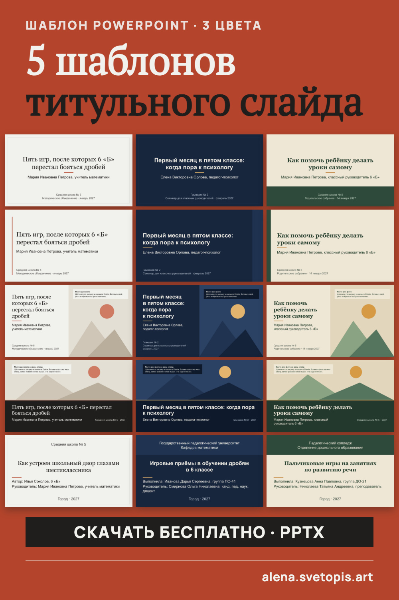
- По центру: для педсовета и собрания.
- От левого края: для конференции и семинара.
- Фото на половину слайда.
- Фото на весь слайд, тема на тёмной плашке.
- По методичке: для школьного проекта, курсовой и диплома.
Каждая раскладка в трёх цветах: светлая, тёмно-синяя и зелёная с песочным. Всего 15 готовых слайдов. Учитель и школа на них вымышлены. В раскладке «По методичке» все строки 28 пт.
Откроется прямо на телефоне, можно листать. 16 страниц: 15 слайдов с подсказками.
Файл .pptx, 270 КБ, для компьютера. С телефона откройте в Google Slides, на Маке в Keynote.

Картинка 1000×1500, 400 КБ, для телефона.
PDF открывается в этой же вкладке, вернуться к статье: кнопка «Назад». Если файл скачался, он в загрузках. Ничего не произошло? Откройте эту страницу в обычном браузере: меню с тремя точками, пункт «Открыть в браузере».
Без регистрации и почты.
Раскладку выбрали, а название не складывается? Пришлите текст доклада, черновик вы увидите до оплаты.
Как подписывали титул в настоящем докладе
Анна Комарницькая, психолог и преподаватель, готовила доклад к международному симпозиуму, до выступления оставались сутки. Подпись на титульный слайд мы не придумывали: черновик ушёл к ней вместе со списком вопросов, и среди них был «как подписать». Имя, должность и организация встали её словами. Весь кейс по шагам
Частые вопросы
Титульный лист и титульный слайд презентации: есть ли разница?
Нет, они значат одно и то же: в методичках первый слайд называют и так, и так.
Что писать на титульном слайде, если авторов несколько?
Всех в одну строку через запятую, в том же порядке, что в заявке. На некоторых конференциях докладчика просят подчеркнуть.
Нужен ли номер на титульном слайде?
Обычно нет: нумерация идёт со второго слайда. В PowerPoint: «Вставка», затем «Номер слайда». В окне включите номер слайда, отметьте, что на титульном слайде он не нужен, и нажмите «Применить ко всем». В Google Slides: «Вставка», затем «Номера слайдов», галочка «Кроме титульных слайдов», кнопка «Применить».
Сделаю к вашему выступлению
Выступать скоро, а времени на слайды нет? Пришлите текст доклада в любом виде. Помощник (ИИ) соберёт черновик вместе с титульным слайдом, а я проверю каждый слайд своими глазами.
от 1 500 ₽ презентация до 10 слайдов
В MAX и в Telegram отвечает бот-приёмщик. Слайды собираю и проверяю я сама.
Как это будет
- Нажимаете кнопку и присылаете текст.
- Узнаёте цену, до этого ничего не платите.
- Получаете черновик до оплаты. Готовая презентация за 1-2 дня, редактируемый файл PowerPoint.
Пример первого сообщения
Здравствуйте! Выступаю на методическом объединении в четверг, 10 минут. Текст доклада пришлю следующим сообщением.
Можно написать так или просто прислать текст.